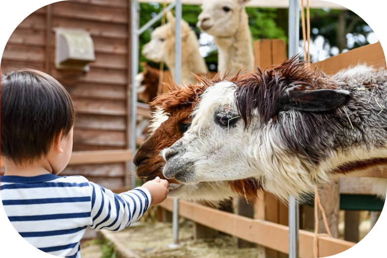

あなたは知ってる？ 蓼科を丸ごと味わう 喜びを
あなたは知ってる？ 蓼科を丸ごと味わう 喜びを

蓼科の生きた豊かな恵みを、そのままに
「蓼科ごとう農園」は、蓼科の新鮮な農産物を提供するだけでなく、
蓼科の自然環境を大切に守り、後世に残すことを使命としています。
私たちは、農業に従事する者として、
土地や水、空気といった自然環境がもたらす恩恵に感謝し、
その恩恵を受け継ぐ未来の世代にも、
同じような恩恵を受け継ぐことができるよう、
最善を尽くしています。
そのため、私たちは有機農法を導入し、
化学肥料や農薬を極力使用しない栽培方法を取り入れています。
また、自然災害に備え、耕作放棄地の再生や山の植林活動など、
地域の環境保全活動にも積極的に参加しています。
私たちは、「蓼科ごとう農園」を通じて、
蓼科の美しい自然を末永く守り、
地域の豊かな暮らしを支えることを目指しています。